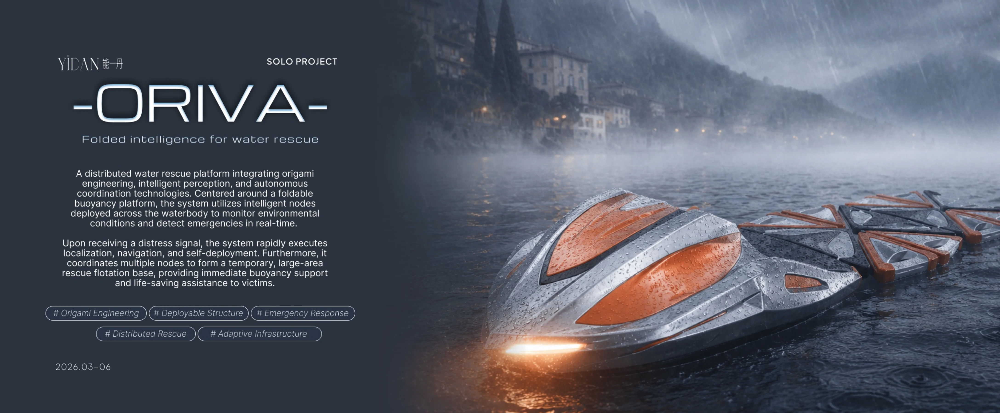
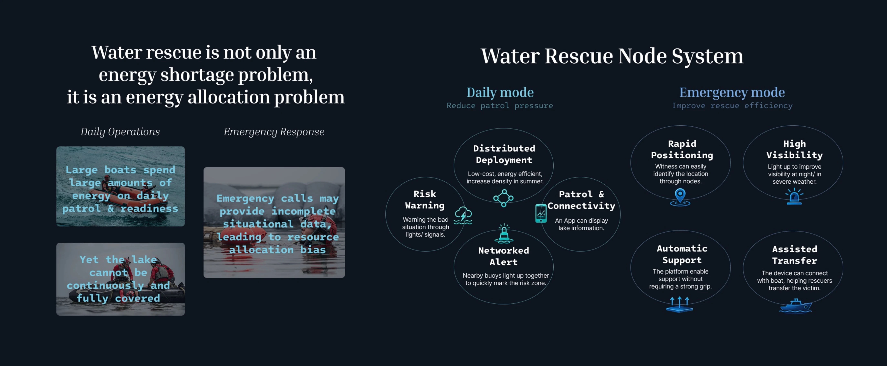
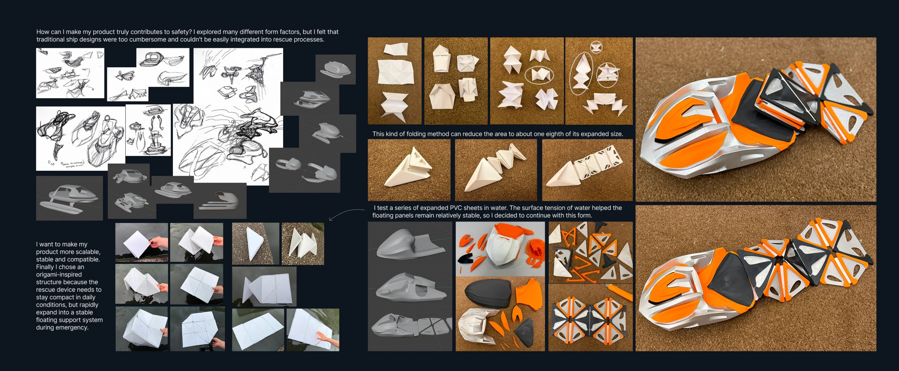
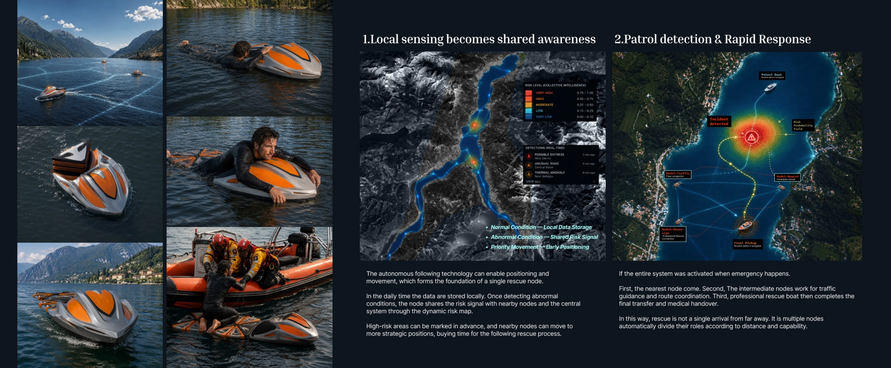

2026 · PERSONAL WORK
ORIVA
Foldable Intelligent Water-Rescue Equipment
A compact rescue system using high-density folding, rapid deployment and multi-device coordination to improve response in complex, high-risk waters.
PROJECT DOCUMENTATION



